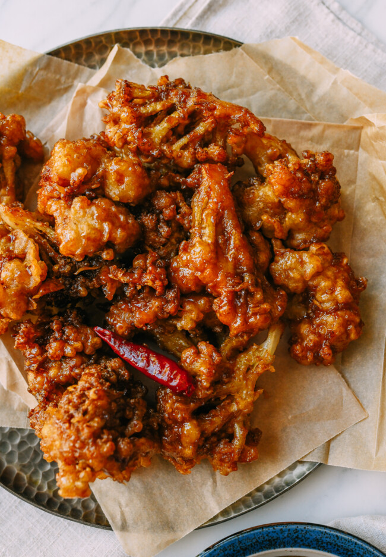

Korean Fried Cauliflower

Ingredients
- 2 pounds cauliflower (about 1 large head)
- canola or peanut oil (for frying)
For the batter
- 1/2 cup potato starch
- 10 tablespoons cake flour
- 1 1/2 teaspoons baking soda
- 1/2 teaspoon salt
- 1/8 teaspoon white pepper
- 3/4 cup water
- 1 teaspoon sesame oil
For the sauce
- 1/4 cup gochujang (Korean hot pepper paste)
- 1/4 cup ketchup
- 1/4 cup rice vinegar
- 1/4 cup honey
- 1 tablespoon soy sauce
- 1 tablespoon sesame oil
- 1 tablespoon minced garlic
- 1 tablespoon minced ginger
- 1 tablespoon cornstarch
- 1 tablespoon water
Directions
For the batter
- Preheat the oven to 450 degrees F (230 degrees C). Line a baking sheet with parchment paper.
- Remove the leaves from the cauliflower and cut into bite-size florets.
- Combine potato starch, cake flour, baking soda, salt, and white pepper in a large bowl. Add water and
sesame oil; whisk until smooth.
- Heat oil in a deep-fryer or large saucepan to 350 degrees F (175 degrees C). Dip cauliflower florets in the
batter and fry in batches until golden brown, 3 to 5 minutes. Transfer to the prepared baking sheet.
- Bake in the preheated oven until crispy, about 10 minutes.
For the sauce
- Combine gochujang, ketchup, rice vinegar, honey, soy sauce, sesame oil, garlic, and ginger in a saucepan
over medium heat. Bring to a boil, stirring constantly, until sauce thickens, about 5 minutes.
- Combine cornstarch and water in a small bowl. Add to the saucepan and stir until sauce thickens again,
about 1 minute. Remove from heat.
- Place cauliflower in a large bowl and pour sauce on top. Toss until well coated.